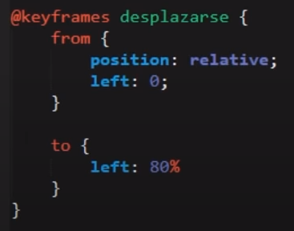
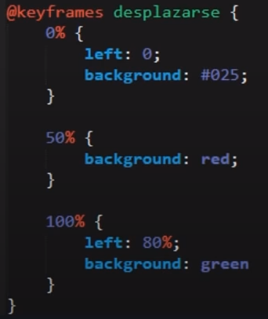

Lección 57 - Animation
Definición: Las propiedades de animaciones son basicamente movimientos dinamicos de los elementos en la pagina web cuando esta se carga.
Para llevar a cabo las animaciones es necesario hacer uso de la regla @keyframes y el nombre de la animacion, este nombre se lo podemos dar nosotros
Ejemplo: @keyframes desplazarse{}.
Estructura de @keyframes:
Estructura 1:

- froms Van las propiedades iniciales del elemento
- to
Propiedades finales que queremos que tenga el elemento
Estructura 2: La diferencia con la anterior estrctura es que con esta podemos aplicar propiedades intermedias de la animación

- 0% Propiedades iniciales con las que empezara el elemento
- 50% Propiedades que se aplicaran al elemento en la mitad de la animación
- 100% Propiedades finales que se aplicaran al elemento
Ahora bien al igual que las transiciones, las animaciones poseen unas propiedades:
-
animation-name: Es una propiedad que debe ir obligatoriamente en el elemento al que quermeos darle la animación, debe ir con
el nombre de la animación que dimos en @keyframes "nombre_de_animación". (VALOR OBLIGARIO PARA QUE FUNCIONE)
-
animation-duration: Esta propiedad define el tiempo que durara la animación. (VALOR OBLIGARIO PARA QUE FUNCIONE)
-
animation-delay: Tiempo de espera antes de empezar la animación
-
animation-timing-function: Esta propiedad es igual a la propiedad de transition-timing-function, la cual posee varios
valores que determinan la aceleración de la animación.
- ease
- ease-in
- ease-out
- ease-in-out
-
animation-iteration-count: Esta propiedad determina la cantidad de veces que queremos que se repita la animación, cabe
destacar que a esa propiedad le podemos asignar un valor de infinite, para que la animación se repita infinitamente.
-
animation-direction: Esta propiedad se establece para definir en que dirección queremos que se lleve a cabo la animación,
posee valores de:
- normal que sera la animación normal
- reverse que revertira la animación
- alternate alternara la anmación de normal a reverse
- alternate-reverse que vendria siendo el mismo alternate soo que iniciando desde la finalización de la animación
-
animation-fill-mode: Esta propiedad define como queremos que termine la animación si queremos que termine con las propiedades
iniciales o las propiedades finales.
- none: El elemento terminara con las propiedades definidias normalmente al final de la animación
-
blackwards: El elemento obtendra los valores de estilo establecidos por el primer fotograma clave (depende de la
dirección de la animación) y lo conservara durante el periodo de retraso de la animación
- forwards: El elemento se queda con las ultimas propiedades
Ejemplo: Propiedades de animation definidias:
animation-name: desplazarse;
animation-duration: 3s;
animation-delay: 1s;
animation-iteration-count: infinite;
animation-timing-function
ease
ease-in
ease-out
ease-in-out
animation-direction
normal
reverse
alternate
alternate-reverse
animation-fill-mode
none
backwards
forwards